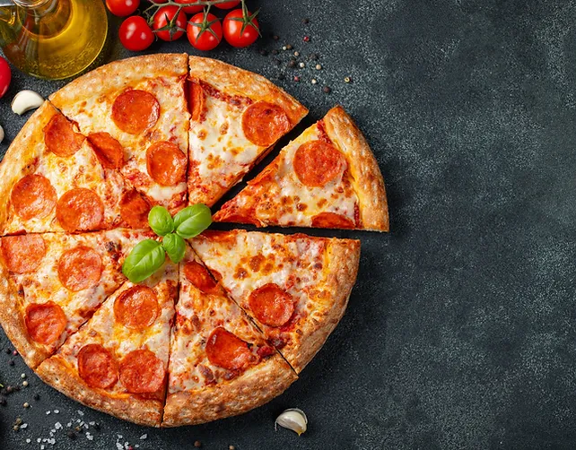

Pepperoni Pizza

Description
This is going to be your homemade style
Pepperoni Pizza. With the nice warm cheese, soft
warm crispy bread and the pepperoni itself.
What's going to be good about this Pizza is that
it's going to be made with love by you personally
Ingredients
- 16 ounces pizza dough
- 1/2 cup of pizza sauce
- 18 to 20 slices of pepperoni
- 12 ounces of mozzarella cheees, grated
- 1/2 teaspoon ground black pepper
- 1 teaspoon fresh oregano, optional
- Flour for rolling and shaping dough
Pizza Sauce
- 1/2 cup tomato sauce (no salt)
- 1/2 teaspoon kosher salt
- 1/2 teaspoon ground black pepper
- 1/2 teaspoon granulated garlic
- 1/2 teaspoon granulated onion
- 1/4 teaspoon red pepper flakes
- 1 teaspoon olive oil
Steps
- Preheat oven to 500 Degrees Fahrenheit:
If using pizza stone, preheat Pizza in the oven
for at least 20 minutes.
- Make the sauce:
The recipe for the sauce makes enough
for one large pizza. It can easily be doubled.
- Roll out dough:
Roll out dough on lightly floured surface.
If it's hard to roll, let it rest for 5 minutes so it can
be at room temperature. For large pizza, roll the dough into
roughly 14-inch diameter circle.
- Add the toppings:
Transfer dough to lightly dusted pizza peel. Alternatively put
it into a large cast-iron.
Add sauce in a light layer all over the pizza, leaveing about
1/4-inch crust around the edges. Chop half of the pepperoni and
sprinkle over the sauce. Top pizza with grated cheese and the
rest of the pepperoni. Season with black pepper.
- If pizza stone is being used, slide pizza carefully into center
of preheated pizza stone. Cook for 6 minutes, then rotate the
pizza halfway so it cooks evenly. Cook for another 6-8 minutes or
until the crust is golden brown and charred in spots.
If skillet is used, press dough into cast iron skillet and
add toppings. Place skillet over high heat burner for 2 minutes to
get it preheated and get crust cooking right away. Then transfer to
500 degree fahrenheit oven and bake for 10-12 minutes or until crust
is golden brown.
- Slice and serve:
Use pizza peel to slide pizza out onto cutting board.
Let pizza rest for a minute and slice into pieces. Season with fresh
oregano (optional). Serve while warm with a side salad.